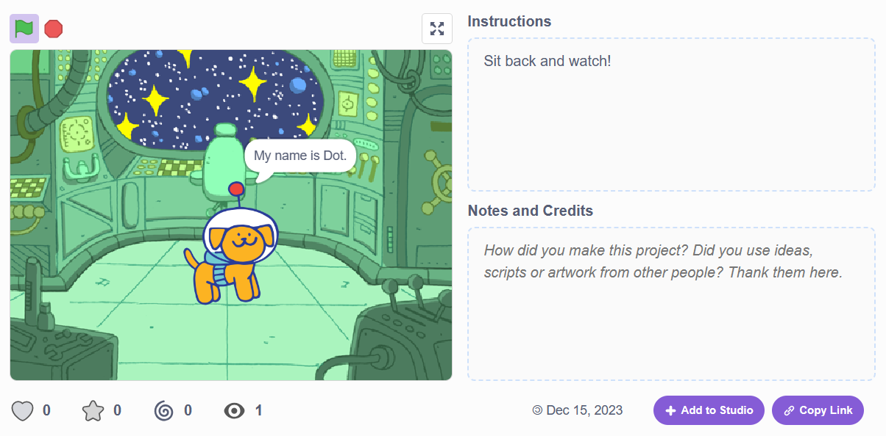

For our first week, we simply created our GitHub repositories. We used
the repositories to showcase our work and to compile it all in one place sufficiently.
Above: My GitHub Repository
During our second week, we created an art piece in the Artist Lab and
did the Dance Party 'Hour of Code' activity - this helped us begin to
see where exactly this class would be going.
Above: My art piece symbolizing the meaning of culture.
For the third week, we began to learn how to use Scratch - a visual
coding interface for beginners to understand code. We were tasked with
creating a story or game to present to our peers.
My Story
Week Four introduced us to the Code Lab and Mobile Lab which showed us
two different types of coding with visual aid. We were tasked with making
a simple game within both applications.

My Game
Week Five was rather unique - we made a simple animation or game in
an application called Alice. It allows for 3D characters and stories,
and is more versatile than the applications we've used so far. I created
a simple animation about two sea snails and an evil bear.
Above: a snippet of my animation.
Go Back